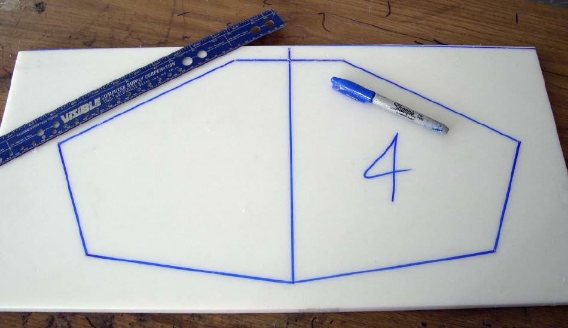

| HDPE Cross Sections | Menu Previous Page Next Page |
|  | |
|
Creating a temporary outline - With the nail marks as a guide, use a ruler and permanent marker to define the "temporary" outline of the cross sections. The final cross section shape between offset points will be concave, with the straight lines between points serving as a reference.
Permanent Marker Pen - The "Sharpie" permanent marker ink is not permanent on HDPE. It can be removed with a cloth. A standard marker pen will not work on HDPE due to the slick surface. |
|